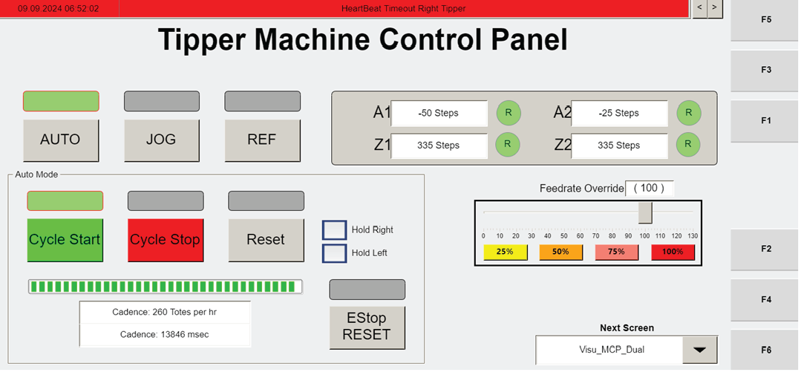

| Procedure ID | proc_start_the_operator_station_verify_agvs_main_disconnect_reset_flashing_estop_home_axes_cycle_start_v1 |
|---|---|
| Title | Start the Operator Station: verify AGVs/main disconnect, reset flashing ESTOP, home axes, and press CYCLE START |
| Procedure Type | operation |
| Primary Role | operator |
| Support Safe | Yes |
| Capability Tags | agv_physical_recovery, robot_command_or_task_state |
| Access Surface | tipper_hmi, physical_floor |
| Audience Roles | operator |
| Failure Pattern Tags | None |
| Validation Status | needs_sme_review |
| Merge Status | source_finalized |
Bring the operator station from an off/faulted state to the tipper “ready” state by verifying AGVs are powered and the main disconnect is ON, clearing flashing ESTOP faults via HMI RESET, homing all tipper axes (Z1/A1 and Z2/A2) using AUTO REF, then pressing CYCLE START to move from “home” to “ready” and placing the tipper into AUTO mode so it waits for WCS instructions.
Use when the operator station has been turned off or is in a faulted/off state and you need to start it so the tipper can home and then wait for WCS instructions in AUTO mode.





Responsible role: operator
Instruction:
Verify the AGVs are powered on.
Expected result:
AGVs are powered on (observable at the site’s AGV power status indicators).
Responsible role: operator
Instruction:
Verify the main disconnect is ON.
Expected result:
Main disconnect is ON (observable at the main disconnect indicator/label).
Responsible role: operator
Instruction:
At the operator station control panel, if the ESTOP is flashing: pull out the ESTOP, then press RESET on the HMI screen to clear any faults.
Expected result:
Flashing ESTOP fault is cleared after pulling out ESTOP and pressing RESET on the HMI.
Stop or Escalate If:
Responsible role: operator
Instruction:
Home every axis (Z1 and A1 for the left tipper; Z2 and A2 for the right tipper) by pressing AUTO REF. Watch the axis button color change from green to yellow while it is moving; the tipper motor moves until it senses the “home” proximity switch, then stops.
Expected result:
All axes home successfully: axis button changes green → yellow while moving, then the tipper motor stops when the “home” proximity switch is sensed.
Stop or Escalate If:
Responsible role: operator
Instruction:
Press CYCLE START. Confirm the motor moves from “home” to “ready.”
Expected result:
Motor moves from “home” to “ready” after pressing CYCLE START.
Stop or Escalate If:
Responsible role: operator
Instruction:
Place the tipper in AUTO mode. Confirm the tipper will wait for the WCS to send instructions.
Expected result:
Tipper is in AUTO mode and is waiting for WCS instructions.